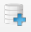

Tutorial 1: Workflow of creating a 3Di Schematisation and a 3Di Model
This tutorial will guide you through the workflow of creating a schematisation and 3Di model with the Modeller Interface. We will:
Create a schematisation
Load a schematisation into Qgis
Upload a schematisation to the management screens and the 3Di Livesite.
We will use a simple model of the Laugharne and Pendine Burrows in the United Kingdom. The burrows enclose a flat area of reclaimed salt marshes that are currently used as farmland. Whilst this tutorial represents a real-world area, it is important to keep in mind that the model is greatly simplified for the purpose of this tutorial.
Requirements
Having the 3Di Modeller Interface, or a custom QGIS with the Models and Simulations plugin, installed. Check out the Installation manual if you do not have the most recent version installed.
Having access to the 3Di management_portal.
Having a copy of the Digital Elevation Map (DEM) for the Burrows area saved locally, which can be downloaded here.
Tip
Feel free to reach out to the Servicedesk whenever you get stuck or experience problems during this tutorial.
What is a schematisation?
A schematisation basically exist of a Spatialite and rasters. A spatialite is a database with a .sqlite extension, which contains the settings and feature data of your schematisation.
Creating a Schematisation
To create a new schematisation:
Open your Modeller Interface and click on the 3Di Models and Simulations icon (). You should now see the Models and Simulations plugin panel.
Note
If you have never used 3Di Models and Simulation you will need to set it up. Follow the steps explained here.
Click the New button () and fill in a unique schematisation name, such as ‘Burrows_tut1_<yourname>’ and select your organisation. The schematisation will be saved on name of this selected organisation. Tags are optional. Since we are creating a schematisation from scratch, the Create new Spatialite option should be selected for the Spatialite option.
Click ‘next’ twice.
Fill in the following values as schematisation settings and then click ‘Create schematisation’:
{kind=link}
{kind=link}
Note
Select the downloaded DEM .tif file for the Digital elevation model field.
{kind=link}
Fig. 30 The settings for your new schematisation.
File location: The schematisation will be saved in your Modeller interface root folder (the Working directory you created here), in a folder with your new schematisation name > work in progress > schematisation. Here you will find your sqlite file and a raster folder with, in this case, only a .tif file of your DEM. The schematisation should now also be selected in your 3Di Models and Simulations Plugin:
Loading a schematisation into the Modeller Interface
In order to upload the new schematisation to the management screens, the sqlite has to be loaded into your Modeller Interface.
This can be done by:
Clicking the ‘Select 3Di results’ button (), which can be found in the 3Di toolbar or via Plugins -> 3Di toolbox -> Select 3Di results.
Click on ‘load’ and select the sqlite at the above mentioned file location. Then click on ‘close’.
Note
Please note that, so far, your schematisation only contains the minimum required information to be uploaded to the management screens. Now that your sqlite has been imported to your modeller interface, your schematisation can be extended. This, however, falls outside the scope of this tutorial.
Uploading the Schematisation
Follow these steps to upload the schematisation to the management screens:
Press the upload button () in the Models and Simulations plugin.
Click on ‘New Upload’ in the window that has popped up and click ‘Next’.
Press the ‘Check Schematisation’ button, which checks whether your spatialite and Rasters are valid to upload. During this tutorial, this should give no warnings nor errors. If the database schema version of your spatialite is outdated, you get a popup asking you to migrate (update) the spatialite to the current schema version. Update the schematisation for this tutorial.
Continue by going to the next screen. Here you have to fill in a commit message. “First commit” is the conventional way of describing the first commit of a new schematisation. Later on, when you want to upload newer versions of your schematisation (so-called Revisions), it is a good-practice to enter detailed information about the changes that you have made.
The default settings of this window are to upload the Schematisation and process it to generate a 3Di Model. Select UPLOAD ONLY if you do not need a 3Di Model.
{kind=link}
Once the progress bar is complete, your schematisation should be visible in the management screens. If you selected UPLOAD AND PROCESS, the newly generated 3Di Model can be found in both the management screens and the 3Di Livesite.
Congratulations! You have just uploaded your first schematisation and threedimodel.